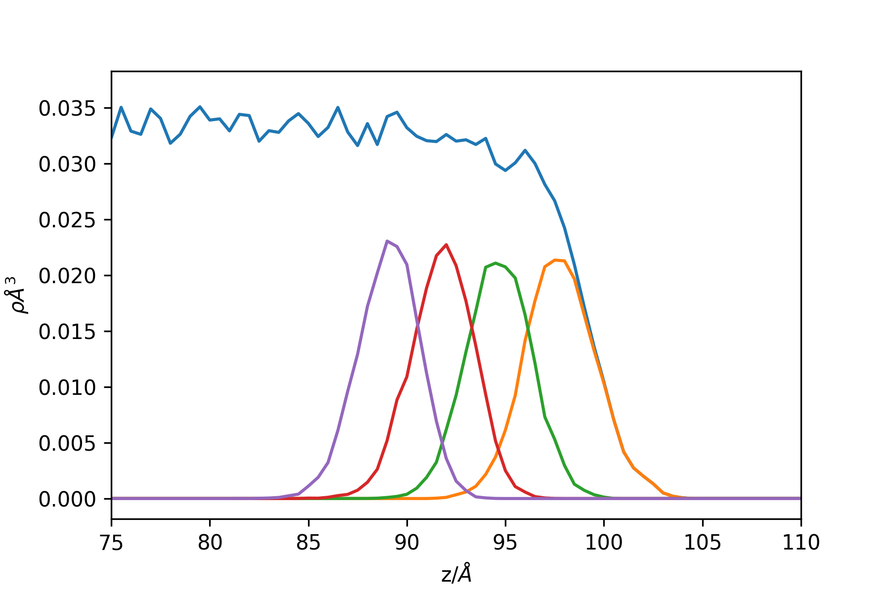

Observables¶
Radial Distribution Functions¶
Module: RDF¶
- class pytim.observables.rdf.RDF(universe, max_distance='full', nbins=75, start=None, stop=None, step=None, observable=None, observable2=None, **kargs)[source]¶
Calculates a radial distribution function of some observable from two groups.
The two functions must return an array (of scalars or of vectors) having the same size of the group. The scalar product between the two functions is used to weight the distriution function.

- Parameters:
max_radius (double) – compute the rdf up to this distance. If ‘full’ is supplied (default) computes it up to half of the smallest box side.
nbins (int) – number of bins
observable (Observable) – observable for the first group
observable2 (Observable) – observable for the second group
Example:
>>> import MDAnalysis as mda >>> import numpy as np >>> import pytim >>> from pytim import observables >>> from pytim.datafiles import * >>> >>> u = mda.Universe(WATER_GRO,WATER_XTC) >>> oxygens = u.select_atoms("name OW") >>> >>> nres = observables.NumberOfResidues() >>> >>> rdf = observables.RDF(u,nbins=120,observable=nres,observable2=nres) >>> >>> interface = pytim.ITIM(u,alpha=2.,group=oxygens,cluster_cut=3.5,molecular=False) >>> >>> for ts in u.trajectory[::50]: ... layer=interface.layers[0,0] ... rdf.sample(layer,layer) >>> rdf.count[0]=0 >>> np.savetxt('RDF3D.dat', np.column_stack((rdf.bins,rdf.rdf)))
Note that one needs to specify neither both groups, not both observables. If only the first group (observable) is specified, the second is assumed to be the same as the first, as in the following example:
>>> rdf1 = observables.RDF(u,observable=nres) >>> rdf2 = observables.RDF(u,observable=nres) >>> rdf3 = observables.RDF(u,observable=nres,observable2=nres) >>> >>> rdf1.sample(layer) >>> rdf2.sample(layer,layer) >>> rdf3.sample(layer,layer) >>> print (np.all(rdf1.rdf[:]==rdf2.rdf[:])) True >>> print (np.all(rdf1.rdf[:]==rdf3.rdf[:])) True
- class pytim.observables.rdf.oldRDF(universe, nbins=75, max_radius='full', start=None, stop=None, step=None, observable=None, observable2=None, kargs1=None, kargs2=None)[source]¶
Calculates a radial distribution function of some observable from two groups.
The two functions must return an array (of scalars or of vectors) having the same size of the group. The scalar product between the two functions is used to weight the distriution function.
- Parameters:
max_radius (double) – compute the rdf up to this distance. If ‘full’ is supplied (default) computes it up to half of the smallest box side.
nbins (int) – number of bins
observable (Observable) – observable for the first group
observable2 (Observable) – observable for the second group
Example:
>>> import MDAnalysis as mda >>> import numpy as np >>> import pytim >>> from pytim import observables >>> from pytim.datafiles import * >>> >>> u = mda.Universe(WATER_GRO,WATER_XTC) >>> oxygens = u.select_atoms("name OW") >>> >>> nres = observables.NumberOfResidues() >>> >>> rdf = observables.RDF(u,nbins=120,observable=nres,observable2=nres) >>> >>> interface = pytim.ITIM(u,alpha=2.,group=oxygens,cluster_cut=3.5,molecular=False) >>> >>> for ts in u.trajectory[::50]: ... layer=interface.layers[0,0] ... rdf.sample(layer,layer) >>> rdf.count[0]=0 >>> np.savetxt('RDF3D.dat', np.column_stack((rdf.bins,rdf.rdf)))
Note that one needs to specify neither both groups, not both observables. If only the first group (observable) is specified, the second is assumed to be the same as the first, as in the following example:
>>> rdf1 = observables.RDF(u,observable=nres) >>> rdf2 = observables.RDF(u,observable=nres) >>> rdf3 = observables.RDF(u,observable=nres,observable2=nres) >>> >>> rdf1.sample(layer) >>> rdf2.sample(layer,layer) >>> rdf3.sample(layer,layer) >>> print (np.all(rdf1.rdf[:]==rdf2.rdf[:])) True >>> print (np.all(rdf1.rdf[:]==rdf3.rdf[:])) True
Module: RDF2D¶
- class pytim.observables.rdf2d.RDF2D(universe, nbins=75, max_radius='full', start=None, stop=None, step=None, excluded_dir='auto', true2D=False, observable=None, kargs1=None, kargs2=None)[source]¶
Calculates a radial distribution function of some observable from two groups, projected on a plane.
The two functions must return an array (of scalars or of vectors) having the same size of the group. The scalar product between the two functions is used to weight the distriution function.
- Parameters:
nbins (int) – number of bins
excluded_dir (char) – project position vectors onto the plane orthogonal to ‘z’,’y’ or ‘z’
observable (Observable) – observable for group 1
observable2 (Observable) – observable for group 2
Example:
>>> import MDAnalysis as mda >>> import numpy as np >>> import pytim >>> from pytim import * >>> from pytim.datafiles import * >>> >>> u = mda.Universe(WATER_GRO,WATER_XTC) >>> oxygens = u.select_atoms("name OW") >>> interface = pytim.ITIM(u,alpha=2.,group=oxygens, cluster_cut=3.5,molecular=False) >>> rdf = observables.RDF2D(u,nbins=250) >>> >>> for ts in u.trajectory[::50] : ... layer=interface.layers[0,0] ... rdf.sample(layer,layer) >>> rdf.count[0]=0 >>> np.savetxt('RDF.dat', np.column_stack((rdf.bins,rdf.rdf)))
This results in the following RDF (sampling more frequently):
(
Source code,png,hires.png,pdf)
{kind=link}
{kind=link}
Profiles¶
Module: Profile¶
- class pytim.observables.profile.Profile(direction=None, observable=None, interface=None, symmetry='default', mode='default', MCnorm=True, **kargs)[source]¶
Calculates the profile (normal, or intrinsic) of a given observable across the simulation box.
- Parameters:
observable (Observable) –
Number,Mass, or any other observable: calculate the profile of this quantity. If None is supplied, it defaults to the number density. The number density is always calculated on a per atom basis.interface (ITIM) – if provided, calculate the intrinsic profile with respect to the first layers
direction (str) – ‘x’,’y’, or ‘z’ : calculate the profile along this direction. (default: ‘z’ or the normal direction of the interface, if provided.
MCnorm (bool) – if True (default) use a simple Monte Carlo estimate the effective volumes of the bins.
- Keyword Arguments:
MCpoints (int) – number of points used for MC normalization (default, 10x the number of atoms in the universe)
Example (non-intrinsic, total profile + first 4 layers ):
>>> import numpy as np >>> import MDAnalysis as mda >>> import pytim >>> from pytim.datafiles import * >>> from pytim.observables import Profile >>> >>> u = mda.Universe(WATER_GRO,WATER_XTC) >>> g = u.select_atoms('name OW') >>> # here we calculate the profiles of oxygens only (note molecular=False) >>> inter = pytim.ITIM(u,group=g,max_layers=4,centered=True, molecular=False) >>> >>> # We create a list of 5 profiles, one for the total and 4 for the first >>> # 4 layers. >>> # Note that by default Profile() uses the number of atoms as an observable >>> Layers = [] >>> for n in range(5): ... Layers.append(Profile()) >>> >>> # Go through the trajectory, center the liquid slab and sample the profiles >>> for ts in u.trajectory[::50]: ... # this shifts the system so that the center of mass of the liquid slab ... # is in the middle of the box ... inter.center() ... ... Layers[0].sample(g) ... Layers[1].sample(u.atoms[u.atoms.layers == 1 ]) ... Layers[2].sample(u.atoms[u.atoms.layers == 2 ]) ... Layers[3].sample(u.atoms[u.atoms.layers == 3 ]) ... Layers[4].sample(u.atoms[u.atoms.layers == 4 ]) >>> >>> density=[] >>> for L in Layers: ... low,up,avg = L.get_values(binwidth=0.5) ... density.append(avg) >>> >>> # (low + up )/2 is the middle of the bin >>> np.savetxt('profile.dat',list(zip(low,up,density[0],density[1],density[2],density[3],density[4])))
This results in the following profile (sampling more often and zooming close to the interface border)
Example: the intrinsic profile of a LJ liquid/vapour interface:
>>> import numpy as np >>> import MDAnalysis as mda >>> import pytim >>> from pytim.datafiles import LJ_GRO, LJ_SHORT_XTC >>> from pytim.observables import Profile
>>> u = mda.Universe(LJ_GRO,LJ_SHORT_XTC) >>> >>> inter = pytim.ITIM(u,alpha=2.5,cluster_cut=4.5) >>> profile = Profile(interface=inter) >>> >>> for ts in u.trajectory: ... profile.sample(u.atoms) >>> >>> low, up, avg = profile.get_values(binwidth=0.5) >>> np.savetxt('profile.dat',list(zip(low,up,avg)))
This results in the following profile (sampling a longer trajectory):

Note the missing point at position = 0, this is the delta-function contirbution. Negative positions are within the liquid phase, while positive ones are in the vapour phase.
{kind=link}
Time Correlation Functions¶
- class pytim.observables.Correlator(universe=None, observable=None, reference=None)[source]¶
Computes the (self) correlation of an observable (scalar or vector)
- Parameters:
observable (Observable) – compute the autocorrelation of this observable. If the observable is None and the reference is not, the survival probability is computed.
normalize (bool) – normalize the correlation to 1 at

reference (AtomGroup) – if the group passed to the sample() function changes its composition along the trajectory (such as a layer group), a reference group that includes all atoms that could appear in the variable group must be passed, in order to provide a proper normalization. See the example below.
Example:
>>> import pytim >>> import MDAnalysis as mda >>> import numpy as np >>> from pytim.datafiles import WATERSMALL_GRO >>> from pytim.utilities import lap >>> # tmpdir here is specified only for travis >>> WATERSMALL_TRR = pytim.datafiles.pytim_data.fetch('WATERSMALL_LONG_TRR',tmpdir='./') checking presence of a cached copy...
>>> u = mda.Universe(WATERSMALL_GRO,WATERSMALL_TRR) >>> g = u.select_atoms('name OW')
>>> velocity = pytim.observables.Velocity() >>> corr = pytim.observables.Correlator(observable=velocity) >>> for t in u.trajectory[1:]: ... corr.sample(g) >>> vacf = corr.correlation()
This produces the following (steps of 1 fs):
(
Source code,png,hires.png,pdf)
In order to compute the correlation for variable groups, one should proceed as follows:
>>> corr = pytim.observables.Correlator(observable=velocity,reference=g) >>> # notice the molecular=False switch, in order for the >>> # layer group to be made of oxygen atoms only and match >>> # the reference group >>> inter = pytim.ITIM(u,group=g,alpha=2.0,molecular=False) >>> # example only: sample longer for smooth results >>> for t in u.trajectory[1:10]: ... corr.sample(inter.atoms) >>> layer_vacf = corr.correlation()
In order to compute the survival probability of some atoms in a layer, it is possible to pass observable=None together with the reference group:
>>> corr = pytim.observables.Correlator(observable=None, reference = g) >>> inter = pytim.ITIM(u,group=g,alpha=2.0, molecular=False) >>> # example only: sample longer for smooth results >>> for t in u.trajectory[1:10]: ... corr.sample(inter.atoms) >>> survival = corr.correlation()
- sample(group)[source]¶
Sample the timeseries for the autocorrelation function
- Parameters:
group (AtomGroup) – compute the observable using this group
- correlation(normalized=True, continuous=True)[source]¶
Calculate the autocorrelation from the sampled data
- Parameters:
normalized (bool) – normalize the correlation function to: its zero-time value for regular correlations; to the average of the characteristic function for the survival probability.
continuous (bool) – applies only when a reference group has been specified: if True (default) the contribution of a particle at time lag
 is considered
only if the particle did not leave the
reference group between
is considered
only if the particle did not leave the
reference group between  and
and
 . If False, the intermittent
correlation is calculated, and the
above restriction is released.
. If False, the intermittent
correlation is calculated, and the
above restriction is released.
Example:
>>> # We build a fake trajectory to test the various options: >>> import MDAnalysis as mda >>> import pytim >>> import numpy as np >>> from pytim.datafiles import WATER_GRO >>> from pytim.observables import Correlator, Velocity >>> np.set_printoptions(suppress=True,precision=3) >>> >>> u = mda.Universe(WATER_GRO) >>> g = u.atoms[0:2] >>> g.velocities*=0.0 >>> g.velocities+=1.0 >>> >>> # velocity autocorrelation along x, variable group >>> vv = Correlator(observable=Velocity('x'), reference=g) >>> nn = Correlator(reference=g) # survival probability in group g >>> >>> for c in [vv,nn]: ... c.sample(g) # t=0 ... c.sample(g) # t=1 ... c.sample(g[:1]) # t=2, exclude the second particle ... g.velocities /= 2. # from now on v=0.5 ... c.sample(g) # t=3 >>>
The timeseries sampled can be accessed using:
>>> print(vv.timeseries) # rows refer to time, columns to particle [[1.0, 1.0], [1.0, 1.0], [1.0, 0.0], [0.5, 0.5]] >>> >>> print(nn.timeseries) [[True, True], [True, True], [True, False], [True, True]] >>>
Note that the average of the characteristic function
 is done over all trajectories, including those
that start with
is done over all trajectories, including those
that start with  .
The correlation
.
The correlation  is divided
by the average
is divided
by the average  computed over all
trajectores that extend up to a time lag
computed over all
trajectores that extend up to a time lag  . The
normalize switch has no effect.
. The
normalize switch has no effect.>>> # normalized, continuous >>> corr = nn.correlation() >>> print (np.allclose(corr, [ 7./7, 4./5, 2./4, 1./2])) True >>> # normalized, intermittent >>> corr = nn.correlation(continuous=False) >>> print (np.allclose(corr, [ 7./7, 4./5, 3./4, 2./2 ])) True
The autocorrelation functions are calculated by taking into account in the average only those trajectory that start with
 (i.e., which start within the reference
group). The normalization is done by dividing the
correlation at time lag by its value at time lag 0
computed over all trajectories that extend up to time
lag and do not start with .
(i.e., which start within the reference
group). The normalization is done by dividing the
correlation at time lag by its value at time lag 0
computed over all trajectories that extend up to time
lag and do not start with .>>> # not normalizd, intermittent >>> corr = vv.correlation(normalized=False,continuous=False) >>> c0 = (1+1+1+0.25+1+1+0.25)/7 >>> c1 = (1+1+0.5+1)/5 ; c2 = (1+0.5+0.5)/4 ; c3 = (0.5+0.5)/2 >>> print (np.allclose(corr, [ c0, c1, c2, c3])) True >>> # check normalization >>> np.all(vv.correlation(continuous=False) == corr/corr[0]) True >>> # not normalizd, continuous >>> corr = vv.correlation(normalized=False,continuous=True) >>> c0 = (1+1+1+0.25+1+1+0.25)/7 >>> c1 = (1+1+0.5+1)/5 ; c2 = (1+0.5)/4 ; c3 = (0.5+0.)/2 >>> print (np.allclose(corr, [ c0, c1, c2, c3])) True >>> # check normalization >>> np.all(vv.correlation(continuous=True) == corr/corr[0]) True
{kind=link}
{kind=link}
Contact Angles¶
- class pytim.observables.ContactAngle(inter, substrate, periodic=None, hcut=0.0, hcut_upper=None, contact_cut=0.0, bins=100, removeCOM=None, store=False)[source]¶
ContactAngle class implementation that uses interfacial atoms to compute droplet profiles and contact angles using different approaches.
- Parameters:
interface (PYTIM) – Compute the contact angle for this interface
droplet (AtomGroup) – Atom group representative of the droplet
substrate (AtomGroup) – Atom group representative of the substrate
periodic (int) – direction along which the system is periodic. Default: None, not periodic If None, the code performs best fit to ellipsoids, otherwise, to ellipses If not None, selects the direction of the axis of macroscopic translational invariance: 0:x, 1:y, 2:z
hcut (float) – don’t consider contributions from atoms closer than this to the substrate (used to disregard the microscopic contact angle)
hcut_upper (float) – don’t consider contributions from atoms above this distance from the substrate default: None
bins (int) – bins used for sampling the profile
removeCOM (int or array_like) – remove the COM motion along this direction(s). Default: None, does not remove COM motion
Example:
>>> import MDAnalysis as mda >>> import numpy as np >>> import pytim >>> from pytim import observables >>> from pytim.datafiles import * >>> >>> u = mda.Universe(WATER_DROPLET_CYLINDRICAL_GRO,WATER_DROPLET_CYLINDRICAL_XTC) >>> droplet = u.select_atoms("name OW") >>> substrate = u.select_atoms("name C") >>> inter = pytim.GITIM(universe=u,group=droplet, molecular=False,alpha=2.5,cluster_cut=3.4, biggest_cluster_only=True) >>> >>> # Contact angle calculation using interfacial atoms, angular bining for a cylindrical droplet >>> # with periodicity along the y (1) axis >>> >>> CA = observables.ContactAngle(inter, substrate, periodic=1,bins=397,removeCOM=0,hcut=5) >>> for ts in u.trajectory[::]: ... CA.sample() >>> # Instantaneous contact angle (last frame) by fitting a circle... >>> np.round(CA.contact_angle,2) 90.58
>>> >>> # ... and using an elliptical fit: >>> left, right = CA.contact_angles >>> # left angle >>> np.round(np.abs(left),2) 79.95
>>> # right angle >>> np.round(right,2) 83.84
>>> # Contact angles from the averaged binned statistics of >>> # surface atoms' radial distance as a function of the azimuthal angle >>> list(np.round(CA.mean_contact_angles,2)) [96.2, 100.68]
- property contact_angle¶
The contact angle from the best-fititng circumference or sphere computed using the current frame
- property mean_contact_angle¶
The contact angle from the best-fititng circumference computed using the location of the interface averaged over the sampled frames
- property contact_angles¶
The contact angles from the best-fititng ellipse or ellipsoid computed using the current frame
- property mean_contact_angles¶
The contact angles from the best-fititng ellipse or ellipsoid computed using the location of the interface averaged over the sampled frames
- sample()[source]¶
samples the profile of a droplet, stores the current atomic coordinates of the liquid surface not in contact with the substrate in the reference frame of the droplet, and optionally the coordinates along the whole trajectory.
- static rmsd_ellipsoid(p, x, N, check_coeffs=True)[source]¶
RMSD between the points x and the ellipsoid defined by the general parameters p of the associated polynomial.
- Parameters:
p (list) – general coefficients [a,b,c,f,g,h,p,q,r,d]
x (ndarray) – points coordinates as a (x,3)-ndarray
N (int) – number of points on the ellipsoid that are generated and used to compute the rmsd
check_coeffs (bool) – if true, perform additional checks
- static ellipse(parmsc, npts=100, tmin=0.0, tmax=6.283185307179586)[source]¶
Return npts points on the ellipse described by the canonical parameters x0, y0, ap, bp, e, phi for values of the paramter between tmin and tmax.
- Parameters:
parmsc (dict) – dictionary with keys: x0,y0,a,b,phi
tmin (float) – minimum value of the parameter
tmax (float) – maximum value of the parameter
npts (int) – number of points to use
- Returns:
- Tuple:
(x,y): coordinates as numpy arrays
- static circle(parmsc, npts=100, tmin=0.0, tmax=6.283185307179586)[source]¶
Return npts points on the circle described by the canonical parameters R, x0, y0 for values of the paramter between tmin and tmax.
- Parameters:
parmsc (dict) – dictionary with keys: R, x0, y0
tmin (float) – minimum value of the parameter
tmax (float) – maximum value of the parameter
npts (int) – number of points to use
- Returns:
- Tuple:
(x,y): coordinates as numpy arrays
- static ellipsoid(parmsc, npts=1000)[source]¶
Compute npts points on the ellipsoid described by the affine parameters T, v
- Parameters:
parmsc (dict) – dictionary with keys: T (3x3 matrix), v (3x1 vector)
npts (int) – number of points to use
- Returns:
- Tuple:
(x,y,z) : coordinates of points on the ellipsoid as ndarrays
- sample_theta_R(theta, r, h)[source]¶
given a set of angles (theta), radii (r) and elevations (h), compute the mean profile h(r) by taking the binned average values of h and r.
- fit_circle(use='frame', nonlinear=True, bins=1)[source]¶
fit an arc through the profile h(r) sampled by the class
- Parameters:
use (str) – ‘frame’ : use the positions of the current frame only (default) ‘histogram’: use the binned values sampled so far ‘stored’ : use the stored surface atoms positions, if the option store=True was passed at initialization
bins (int) – the number of bins to use along the symmetry direction (cylinder axis, azimuthal angle)
- Returns:
a list including, for each of the bins:
- tuple:
radius, base radius, cos(theta), center
- fit_ellipse(use='frame', nonlinear=True, bins=1)[source]¶
fit an ellipse through the points sampled by the class. See implementation details in _fit_ellipsoid()
- Parameters:
use (str) – ‘frame’ : use the positions of the current frame only (default) ‘histogram’: use the binned values sampled so far ‘stored’ : use the stored surface atoms positions, if the option store=True was passed at initialization
bins (int) – the number of bins to use along the symmetry direction (cylinder axis, azimuthal angle)
- Returns:
a list including, for each of the bins, a tuple with elements:
- list:
parms: parameters of the ellipse polynomial in general form: a[0] x^2 + a[1] x y + a[2] y^2 + a[3] x + a[4] y = 0
- dict:
parmsc: dictionary of parameters in canoncial form: (a,b, x0,y0,phi, e) with a,b the major and minor semiaxes, x0,y0 the center, phi the angle (in rad) between x axis and major axis, and e the eccentricity.
- list:
theta: [left contact angle, right contact angle]
- fit_ellipsoid(use='frame', nonlinear=True, bins=1)[source]¶
fit an ellipsoid through the points sampled by the class. See implementation details in _fit_ellipsoid()
:param str use : ‘frame’ : use the positions of the current frame only (default) ‘histogram’: use the binned values sampled so far ‘stored’ : use the stored surface atoms positions, if the option store=True was passed at initialization :param int bins : the number of bins to use along the symmetry direction (cylinder axis, azimuthal angle)
- Returns:
a list with a tuple (parms,parmsc,theta, rmsd) for each of the bins; If only one bin is present, return just the tuple.
- array:
parms : array of parameters of the ellipsoid equation in general form: a[0] x^2 + a[1] y^2 + a[2] z^2 + a[3] yz + a[4] xz + a[5] xy + a[6] x + a[7] y + a[8] z + a[9] = 0, otherwise.
- dict:
parmsc : dictionary with parameters of the ellipsoid affine form (T,v), such that the ellipsoid points are r = T s + v, if s are points from the unit sphere centered in the origin.
- float:
theta : the contact angle as a function of the azimuthal angle phi from phi=0, aligned with (-1,0,0) to 2 pi.
- float:
rmsd : the rmsd to the best fit (linear or nonlinear) ellipsoid
3D Distributions¶
- class pytim.observables.DistributionFunction(universe, order, nbins=75, start=None, stop=None, step=None, generalized_coordinate=None, generalized_coordinate2=None, observable=None, observable2=None, max_distance=None, coords_in=['x', 'y', 'z'], coords_out=['x', 'y', 'z'], kargs1=None, kargs2=None)[source]¶
Calculates a 3d distribution function of some observable from two groups.
The two functions must return an array (of scalars or of vectors) having the same size of the group. The scalar product between the two functions is used to weight the distriution function.

- Parameters:
max_distance (double) – compute the sdf up to this distance along the axes. If a list or an array is supplied, each element will determine the maximum distance along each axis. If ‘full’ is supplied (default) computes it up to half of the smallest box side.
nbins (int) – number of bins used for the sampling in all directions. Supply a list or an array to use a different number of bins along each of the directions
observable (Observable) – observable for the first group
observable2 (Observable) – observable for the second group
Example:
>>> import MDAnalysis as mda >>> import numpy as np >>> import pytim >>> from pytim import observables >>> from pytim.datafiles import * >>> >>> u = mda.Universe(WATER_GRO,WATER_XTC) >>> oxygens = u.select_atoms("name OW") >>> >>> nres = observables.NumberOfResidues() >>> >>> rdf = observables.RDF(u,nbins=120,observable=nres,observable2=nres) >>> >>> interface = pytim.ITIM(u,alpha=2.,group=oxygens,cluster_cut=3.5,molecular=False) >>> >>> for ts in u.trajectory[::50]: ... layer=interface.layers[0,0] ... rdf.sample(layer,layer) >>> rdf.count[0]=0 >>> np.savetxt('RDF3D.dat', np.column_stack((rdf.bins,rdf.rdf)))
Note that one needs to specify neither both groups, not both observables. If only the first group (observable) is specified, the second is assumed to be the same as the first, as in the following example:
>>> rdf1 = observables.RDF(u,observable=nres) >>> rdf2 = observables.RDF(u,observable=nres) >>> rdf3 = observables.RDF(u,observable=nres,observable2=nres) >>> >>> rdf1.sample(layer) >>> rdf2.sample(layer,layer) >>> rdf3.sample(layer,layer) >>> print (np.all(rdf1.rdf[:]==rdf2.rdf[:])) True >>> print (np.all(rdf1.rdf[:]==rdf3.rdf[:])) True
Free Volume¶
- class pytim.observables.FreeVolume(universe, npoints=None)[source]¶
Calculates the fraction of free volume in the system, or its profile.
Note that this does not fit in the usual observable class as it can not be expressed as a property of particles, and needs some kind of gridding to be calculated.
- Parameters:
universe (Universe) – the universe
npoints (int) – number of Monte Carlo sampling points (default: 10x the number of atoms in the universe)
- Returns:
- Tuple:
free volume, error : A tuple with the free volume and the estimated error
Examples:
>>> import MDAnalysis as mda >>> import numpy as np >>> import pytim >>> from pytim.datafiles import CCL4_WATER_GRO, _TEST_BCC_GRO >>> >>> u = mda.Universe(CCL4_WATER_GRO) >>> inter = pytim.ITIM(u) # just to make sure all radii are set >>> np.random.seed(1) # ensure reproducibility of test >>> FV = pytim.observables.FreeVolume(u) >>> bins, prof ,err = FV.compute_profile() >>> >>> free, err = FV.compute() >>> print ('{:0.3f} +/- {:0.3f}'.format(free,err)) 0.431 +/- 0.001
>>> # strict test on bcc volume fraction >>> u = mda.Universe(_TEST_BCC_GRO) >>> # we add some random gitter to avoid singular matrices >>> u.atoms.positions += np.random.random(u.atoms.positions.shape)*1e-5 >>> inter = pytim.GITIM(u,radii_dict={'C':10.*np.sqrt(3.)/4.}) >>> nsamples = int(1e5) >>> FV = pytim.observables.FreeVolume(u,npoints = nsamples) >>> np.random.seed(1) # ensure reproducibility of test >>> free, err = FV.compute() >>> np.isclose(free,1.0-0.6802,rtol=1e-3) True >>> np.random.seed(1) # ensure reproducibility of test >>> lst, _ = FV._compute() >>> np.isclose(free,1.0-len(lst)*1.0/nsamples, rtol=1e-6) True
- compute_profile(inp=None, nbins=30, direction=2)[source]¶
Compute a profile of the free volume fraction
- Parameters:
inp (AtomGroup) – compute the volume fraction of this group, None selects the complete universe
nbins (int) – number of bins, by default 30
direction (int) – direction along wich to compute the the profile, z (2) by default
- Returns:
- Tuple:
bins,fraction,error: the left limit of the bins, the free volume fraction in each bin, the associated std deviation
- compute(inp=None)[source]¶
Compute the total free volume fraction in the simulation box
- Parameters:
inp (AtomGroup) – compute the volume fraction of this group, None selects the complete universe
nbins (int) – number of bins, by default 30
- Returns:
- Tuple:
fraction, error: the free volume fraction and associated error
Local Reference Frame¶
Misc¶
- class pytim.observables.IntrinsicDistance(interface, symmetry='default', mode='default')[source]¶
Initialize the intrinsic distance calculation.
- Parameters:
interface (PYTIM) – compute the intrinsic distance with respect to this interface
symmetry (str) – force calculation using this symmetry, if availabe (e.g. ‘generic’, ‘planar’, ‘spherical’) If ‘default’, uses the symmetry selected in the PYTIM interface instance.
Example:
>>> import MDAnalysis as mda >>> import pytim >>> import numpy as np >>> from pytim import observables >>> from pytim.datafiles import MICELLE_PDB >>> u = mda.Universe(MICELLE_PDB) >>> micelle = u.select_atoms('resname DPC') >>> waterox = u.select_atoms('type O and resname SOL') >>> inter = pytim.GITIM(u,group=micelle, molecular=False, alpha=2.0) >>> dist = observables.IntrinsicDistance(interface=inter) >>> d = dist.compute(waterox) >>> np.set_printoptions(precision=3,threshold=10) >>> print(d) [25.733 8.579 8.852 ... 18.566 13.709 9.876]
>>> np.set_printoptions(precision=None,threshold=None)
- class pytim.observables.LayerTriangulation(interface, return_triangulation=True, return_statistics=True)[source]¶
Computes the triangulation of the surface and some associated quantities. Notice that this forces the interface to be centered in the box.
- Parameters:
universe (Universe) – the MDAnalysis universe
interface (ITIM) – compute the triangulation with respect to it
layer (int) – (default: 1) compute the triangulation with respect to this layer of the interface
return_triangulation (bool) – (default: True) return the Delaunay triangulation used for the interpolation
return_statistics (bool) – (default: True) return the Delaunay triangulation used for the interpolation
- Returns:
Observable LayerTriangulation
Example:
>>> import pytim >>> import MDAnalysis as mda >>> from pytim.datafiles import WATER_GRO
>>> interface = pytim.ITIM(mda.Universe(WATER_GRO),molecular=False) >>> surface = pytim.observables.LayerTriangulation( interface,return_triangulation=False) >>> stats = surface.compute() >>> print ("Surface= {:04.0f} A^2".format(stats[0])) Surface= 6328 A^2
- class pytim.observables.LocalReferenceFrame(*arg, **kwarg)[source]¶
Compute the local surface using a definition based on that of S. O. Yesylevskyy and C. Ramsey, Phys.Chem.Chem.Phys., 2014, 16, 17052 modified to include a guess for the surface normal direction
Example (note that this example started failing on the last output line with opposite signs for x and y. Could be an instability of the SVD, thus the test is removed from the docstring):
>>> import MDAnalysis as mda >>> import pytim >>> from pytim.datafiles import WATER_GRO >>> import numpy as np >>> g=mda.Universe(WATER_GRO).select_atoms('name OW') >>> inter = pytim.ITIM(g,molecular=False) >>> frame = pytim.observables.LocalReferenceFrame().compute(g) >>> np.set_printoptions(precision=6,threshold=2,suppress=None) >>> print(frame) [[[-0.330383 0.740913 -0.584718] [-0.937619 -0.328689 0.113291] [ 0.108252 -0.585672 -0.803287]] [[-0.98614 0.164904 0.018286] [-0.146148 -0.811192 -0.566223] [ 0.078538 0.561048 -0.824049]] [[-0.921816 -0.28798 -0.259465] [ 0.182384 -0.912875 0.365233] [ 0.342039 -0.289355 -0.894026]] ... [[-0.740137 -0.557695 0.375731] [ 0.369404 0.129692 0.920174] [-0.561906 0.819852 0.110024]] [[-0.198256 -0.724093 0.660594] [ 0.64637 -0.603238 -0.467236] [-0.736818 -0.334356 -0.587627]] [[ 0.268257 -0.337893 -0.902146] [ 0.233933 -0.885591 0.401253] [-0.934513 -0.31868 -0.158522]]]
>>> np.set_printoptions()
Basic Observables¶
- class pytim.observables.NumberOfResidues(*arg, **karg)[source]¶
The number of residues.
Instead of associating 1 to the center of mass of the residue, we associate 1/(number of atoms in residue) to each atom. In an homogeneous system, these two definitions are (on average) equivalent. If the system is not homogeneous, this is not true anymore.
- class pytim.observables.Orientation(universe, options='')[source]¶
Orientation of a group of points.
- Parameters:
options (str) – optional string. If normal is passed, the orientation of the normal vectors is computed If the option ‘molecular’ is passed at initialization the coordinates of the second and third atoms are folded around those of the first.
- compute(inp, kargs=None)[source]¶
Compute the observable.
- Parameters:
inp (ndarray) – the input atom group. The length must be a multiple of three
- Returns:
the orientation vectors
For each triplet of positions A1,A2,A3, computes the unit vector between A2-A1 and A3-A1 or, if the option ‘normal’ is passed at initialization, the unit vector normal to the plane spanned by the three vectors.
- class pytim.observables.Position(arg='xyz', **kwarg)[source]¶
Atomic positions
Example: compute the projection on the xz plane of the first water molecule
>>> import MDAnalysis as mda >>> import pytim >>> u = mda.Universe(pytim.datafiles.WATER_GRO) >>> proj = pytim.observables.Position('xz') >>> with np.printoptions(precision=3): ... print(proj.compute(u.residues[0].atoms) ) [[28.62 11.37] [28.42 10.51] [29.61 11.51]]